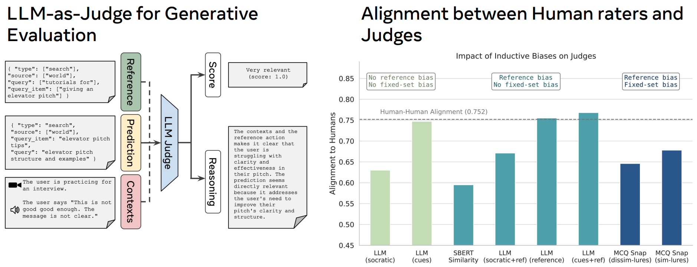

Abstract
There has been a surge of interest in assistive wearable agents: agents embodied in wearable form factors (e.g., smart glasses) who take assistive actions toward a user's goal/query (e.g. "Where did I leave my keys?"). In this work, we consider the important complementary problem of inferring that goal from multi-modal contextual observations. Solving this "goal inference" problem holds the promise of eliminating the effort needed to interact with such an agent. This work focuses on creating a strong benchmark to measure progress in solving this problem using vision-language models (VLMs). Given the limited prior work in this area, we collected a novel dataset comprising 29 hours of multimodal data from 348 participants across 3477 recordings, featuring ground-truth goals alongside accompanying visual, audio, digital, and longitudinal contextual observations. We validate that human performance exceeds model performance, achieving 93% multiple-choice accuracy compared with 84% for the best-performing VLM. Generative benchmark results that evaluate several families of modern vision-language models show that larger models perform significantly better on the task, yet remain far from practical usefulness, as they produce relevant goals only 55% of the time. Through a modality ablation, we show that models benefit from extra information in relevant modalities with minimal performance degradation from irrelevant modalities.
Benchmark

Three multi-modal samples from the benchmark. In the top row, the video and digital contexts are relevant to the prediction problem, and audio/longitudinal are noise. In the middle row, video and audio are relevant. In the bottom row, the video, audio, and longitudinal contexts are relevant.

1) Performance improves with model size in our scaling law experiments. 2) Multi-modal context (e.g. Vision+Audio) strengthens performance. 3) Large models suffer less interference from mixed modalities, better disentangle relevant features.
1) LLM-Judges with access to the reference goal best align with human raters. 2) The Judge model parameterized with both reference and script cues best aligns with human judgment (76.8%).
Examples
Prediction with Vision modality
Reference Goal:
{
"type": "search",
"source": "world",
"query": "tutorials for",
"query_item": "Rubik's cube"
}
Predicted Goal:
{
"type": "search",
"source": "world",
"query": "Rubik's Cube",
"query_item": "solution"
}
Explanation: Model's prediction matches well to the reference goal of searching for the Rubik's Cube solution
Prediction with Audio-Vision modality
Reference Goal:
{
"type": "search",
"source": "world",
"query": "find",
"query_item": "chiropractor"
}
Predicted Goal:
{
"type": "search",
"source": "world",
"query_item": "chiropractor near me",
"query": "appointment availability"
}
Explanation: The model predicted correct goal with vision+audio inputs, whereas if only supplied with the video (no audio), it incorrectly predicts "share basketball moment with friends"
Prediction with Vision-Digital modality
Reference Goal:
{
"type": "search",
"source": "world",
"query": "nearby movie times for",
"query_item": "inside out 2"
}
Digital Contexts:
{
'Calendar': {'title': 'Cinema Evening with Caleb Hall', 'start_datetime': '2025-04-23 18:00', 'end_datetime': '2025-04-23 21:00', 'location': 'Landmark Theatres, 911 Pine St, Seattle, WA 98101'}
...
}
Predicted Goal:
{
"type": "search",
"source": "world",
"query_item": "Inside Out 2",
"query": "showtimes and ticket availability"
}
Explanation: The model predicted correct goal with vision+digital cues, whereas it fails if only supplied with the video (no audio) inputs
Prediction with Vision-Longitudinal modality
Reference Goal:
{
"type": "guided_activity",
"content": "white noise",
"time": "0:01:48"
}
Longitudinal Contexts:
{
Context: The video captures a serene bedtime routine. The person adjusts the bedding and prepares for sleep. The lamp casts a warm glow, highlighting the room's cozy ambiance. The person wears a watch, indicating their presence in the scene.
Action: {'type':'guided_activity', 'content': 'white noise', 'time': '0:02:06'}
...
}
Predicted Goal:
{
"type": "guided_activity",
"content": "relaxation exercise",
"time": "15 minutes"
}
Explanation: The model combines longitudinal user history and visual observations to accurately predict the goal.
Resources
BibTeX
@inproceedings{wagibench2025,
author = {Veerabadran, Vijay and Xiao, Fanyi and Kamra, Nitin and Matias, Pedro and Chen, Joy and Drooff, Caley and Roads, Brett and Williams, Riley J and Henderson, Ethan and Zhao, Xuanyi and Carlberg, Kevin and Tighe, Joseph and Ridgeway, Karl},
title = {Benchmarking Egocentric Multimodal Goal Inference for Assistive Wearable Agents},
booktitle = {Proceedings of The Thirty-Ninth Annual Conference on Neural Information Processing Systems (NeurIPS 2025)},
year = {2025},
}